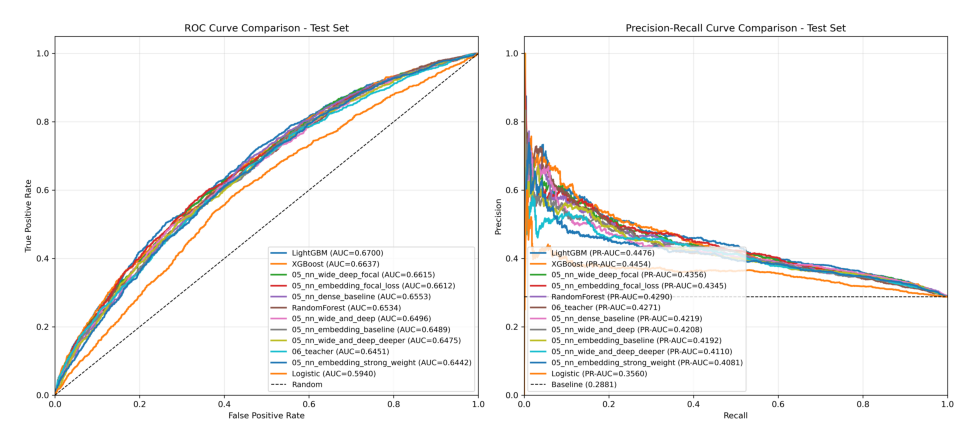
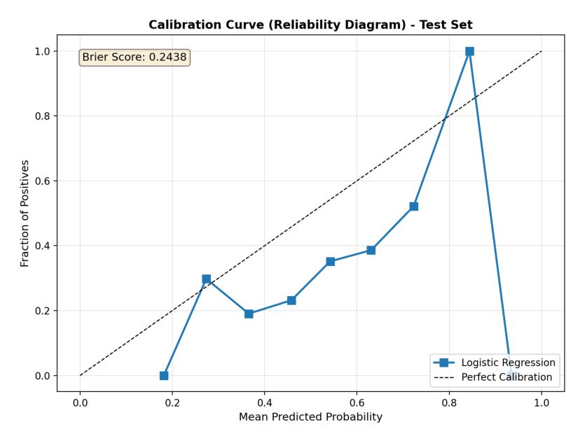
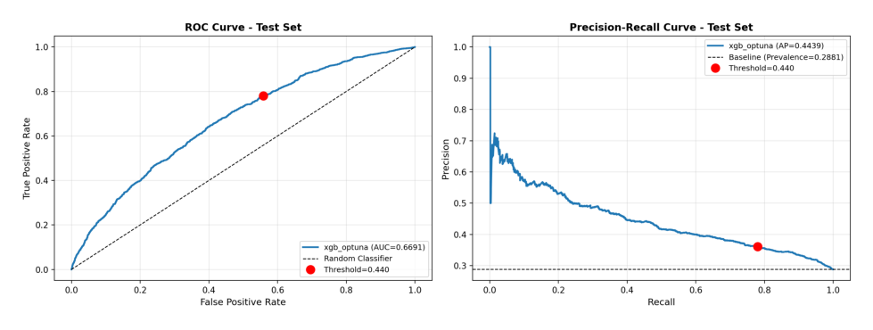
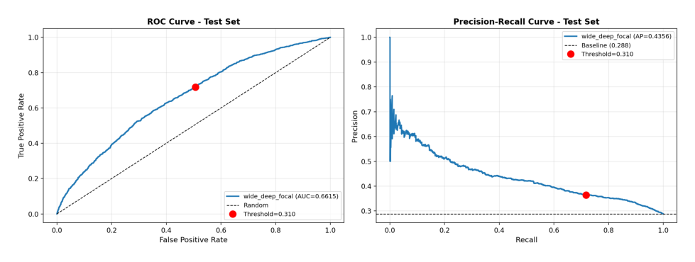
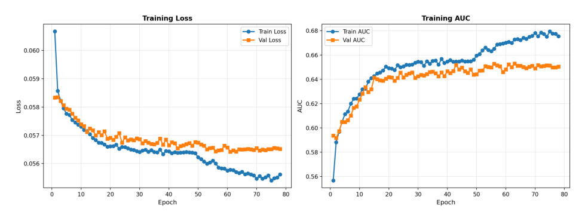
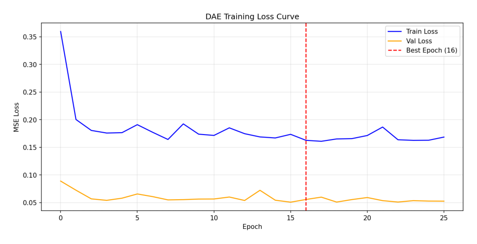
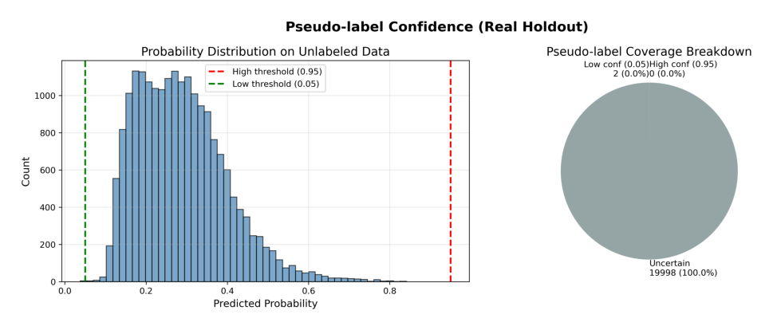
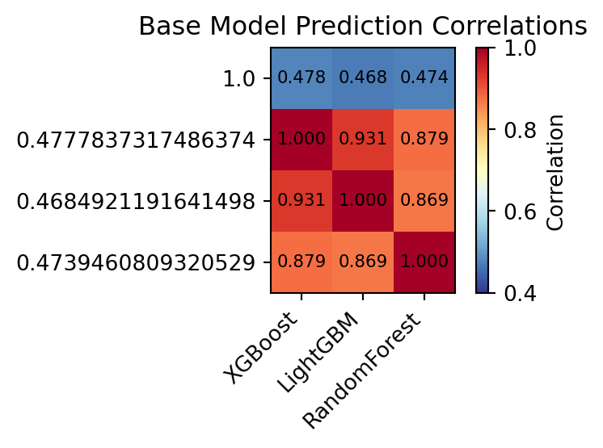
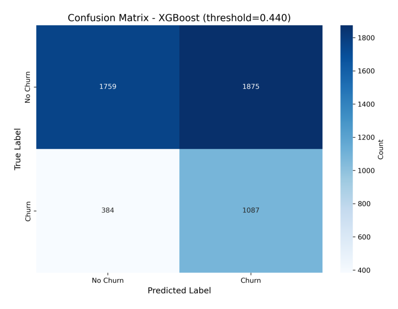

| model | val_roc_auc | val_pr_auc | test_roc_auc | test_pr_auc | test_brier | test_f1 | test_recall | test_precision | threshold |
|---|---|---|---|---|---|---|---|---|---|
| XGBoost | 0.657146 | 0.435915 | 0.663681 | 0.445441 | 0.223314 | 0.490413 | 0.738953 | 0.366982 | 0.44 |
| 05_nn_wide_deep_focal | 0.653063 | 0.429338 | 0.661457 | 0.435612 | 0.197007 | 0.0174614 | 0.00883753 | 0.722222 | 0.44 |
| LightGBM | 0.650239 | 0.4311 | 0.669973 | 0.447632 | 0.219983 | 0.49688 | 0.730795 | 0.376401 | 0.44 |
| 05_nn_wide_and_deep | 0.649779 | 0.418712 | 0.649605 | 0.42076 | 0.2364 | 0.482441 | 0.7845 | 0.348325 | 0.44 |
| RandomForest | 0.649016 | 0.421517 | 0.653428 | 0.428959 | 0.228971 | 0.480699 | 0.804215 | 0.342799 | 0.44 |
| 05_nn_embedding_focal_loss | 0.648666 | 0.421622 | 0.661197 | 0.434519 | 0.197579 | 0 | 0 | 0 | 0.44 |
| 05_nn_dense_baseline | 0.646737 | 0.425746 | 0.65528 | 0.421941 | 0.234346 | 0.489779 | 0.806254 | 0.35172 | 0.44 |
| 05_nn_embedding_baseline | 0.642545 | 0.408729 | 0.648944 | 0.419172 | 0.232875 | 0.487391 | 0.781781 | 0.354064 | 0.44 |
| 05_nn_wide_and_deep_deeper | 0.642242 | 0.414346 | 0.647519 | 0.411018 | 0.232793 | 0.482227 | 0.765466 | 0.351985 | 0.44 |
| 05_nn_embedding_strong_weight | 0.64173 | 0.411761 | 0.644192 | 0.408117 | 0.271837 | 0.478787 | 0.901428 | 0.325959 | 0.44 |
| 06_teacher | 0.63778 | 0.418322 | 0.645056 | 0.427104 | 0.193299 | 0.262616 | 0.173351 | 0.541401 | 0.44 |
| Logistic | 0.588286 | 0.347494 | 0.593987 | 0.355974 | 0.24378 | 0.456037 | 0.840925 | 0.312848 | 0.44 |
6 Experiments and Results
6.1 Overall Benchmark Summary
All models were evaluated on the held-out test set using threshold-independent ranking metrics (ROC-AUC and PR-AUC) alongside threshold-dependent decision metrics (precision, recall, and F1) at a fixed operating point. Table 6.1 reports the complete benchmark results, while Figure 6.1 summarizes the corresponding ROC and precision–recall (PR) curves. Because the churn rate in the test set is 28.8%, a non-informative baseline achieves a PR-AUC of approximately 0.2880; all trained models exceeded this baseline by a substantial margin.
Across the supervised model families, gradient-boosted decision trees delivered the strongest overall performance. Using the validation-set ROC-AUC criterion defined in Section 5.2, XGBoost was selected as the champion model (validation ROC-AUC = 0.6571, validation PR-AUC = 0.4359). On the test set, the champion XGBoost model achieved ROC-AUC = 0.6637 and PR-AUC = 0.4454. At the fixed operating threshold of 0.4400, it reached precision = 0.3670, recall = 0.7390, and F1 = 0.4904 (the corresponding confusion matrix is reported in Section 6.7). Notably, LightGBM achieved the highest test ROC-AUC among the single supervised models (test ROC-AUC = 0.6700, test PR-AUC = 0.4476), indicating that the two leading GBM approaches were closely matched on this dataset.
The remaining baselines formed clear lower tiers. Random Forest achieved ROC-AUC = 0.6534 and PR-AUC = 0.4271, while the logistic regression baseline yielded ROC-AUC = 0.5940 and PR-AUC = 0.3560. The deep learning models clustered in a narrow band: their test ROC-AUC values ranged from approximately 0.6440 to 0.6620, and test PR-AUC ranged from approximately 0.4080 to 0.4360. The best neural model by ranking metrics was a Wide & Deep variant with focal loss (test ROC-AUC = 0.6615, test PR-AUC = 0.4356). Under the fixed threshold of 0.4400, several focal-loss neural variants produced very few positive predictions, resulting in near-zero recall and F1 despite competitive AUC/PR-AUC; therefore, ranking metrics provide the fairest comparison at this aggregate level, while threshold-based outcomes are interpreted separately in Section 6.7.
Figure 6.1 visually corroborates these findings. The ROC curves for the leading models (LightGBM and XGBoost) lie consistently above the other model families across most false-positive rates, and the PR curves show a clear separation from the prevalence baseline (approximately 0.2880), with the top models maintaining higher precision at comparable recall. In addition to single-model benchmarks, heterogeneous ensemble experiments (Section 6.6) produced performance comparable to the best GBMs, with the best ensembles reaching approximately 0.6690 test ROC-AUC and 0.4490 test PR-AUC, representing a modest lift relative to the champion XGBoost model.

Note: Models were selected based on Validation ROC-AUC (as shown in the leaderboard in appendix). The plots below display performance on the held-out Test Set to provide an unbiased evaluation of generalization. Small discrepancies between ranking and plotting order are expected.
6.2 Baseline Performance (Logistic Regression)
To provide a simple and interpretable reference point, a regularized logistic regression model was first evaluated as the supervised baseline. On the held-out test set, the baseline achieved a ROC-AUC of 0.5940 and a PR-AUC (average precision) of 0.3560, indicating modest but meaningful discrimination despite the class imbalance (Table 6.2). For context, the test-set churn prevalence is 0.2880, so the baseline PR-AUC is clearly above the prevalence level expected from random ranking; this relationship is also visible in the precision–recall curve where the model stays above the horizontal prevalence line across a wide recall range (Section A.3.3).
| split | threshold | roc_auc | pr_auc | brier_score | precision | recall | f1_score | true_negatives | false_positives | false_negatives | true_positives |
|---|---|---|---|---|---|---|---|---|---|---|---|
| Train | 0.44 | 0.593797 | 0.354992 | 0.24399 | 0.314526 | 0.847396 | 0.458771 | 7333 | 21735 | 1796 | 9973 |
| Validation | 0.44 | 0.588286 | 0.347494 | 0.244917 | 0.311646 | 0.836846 | 0.45416 | 915 | 2719 | 240 | 1231 |
| Test | 0.44 | 0.593987 | 0.355974 | 0.24378 | 0.312848 | 0.840925 | 0.456037 | 917 | 2717 | 234 | 1237 |
The baseline exhibited stable performance across data splits. On the validation set, the model reached ROC-AUC = 0.5880 and PR-AUC = 0.3480, closely matching test-set results and providing a consistent lower-bound benchmark for subsequent model families. In addition to ranking metrics, decision-level performance is reported at the operating threshold used for downstream comparisons (threshold = 0.4400). At this threshold, the test-set confusion matrix contained 917 true negatives, 2,717 false positives, 234 false negatives, and 1,237 true positives, corresponding to recall = 0.8410, precision = 0.3130, and F1 = 0.4560. Detailed ROC curves, PR curves, and confusion matrices for the logistic regression baseline are provided in Section A.3.3.
Finally, probability accuracy was summarized via the Brier score, which was 0.2440 on the test set; the corresponding reliability diagram provides a visual check of calibration quality (Figure 6.2). Overall, this baseline establishes a conservative performance floor against which the gains from nonlinear models (tree/GBM, neural networks) and ensembling can be quantified.

6.3 Tree and GBM Results
As a first step beyond the linear baseline, two tree-based benchmarks were evaluated: a single decision tree and a random forest. Table 6.3 reports ROC-AUC and PR-AUC on both validation and test sets, and Figure 6.3 visualizes the corresponding ROC and PR curves on the test set.
| model | split | roc_auc | pr_auc | brier_score | threshold | precision | recall | f1_score | true_negatives | false_positives | false_negatives | true_positives |
|---|---|---|---|---|---|---|---|---|---|---|---|---|
| dt_baseline | val | 0.631703 | 0.403643 | 0.238156 | 0.5 | 0.370782 | 0.590075 | 0.455404 | 2161 | 1473 | 603 | 868 |
| dt_baseline | test | 0.625077 | 0.393425 | 0.238209 | 0.5 | 0.367982 | 0.57036 | 0.447347 | 2193 | 1441 | 632 | 839 |
| rf_baseline | val | 0.649016 | 0.421517 | 0.231366 | 0.5 | 0.365991 | 0.662814 | 0.471584 | 1945 | 1689 | 496 | 975 |
| rf_baseline | test | 0.653428 | 0.428959 | 0.228971 | 0.5 | 0.373933 | 0.655337 | 0.476167 | 2020 | 1614 | 507 | 964 |
| xgb_baseline | val | 0.657146 | 0.435915 | 0.226199 | 0.5 | 0.385664 | 0.596193 | 0.468358 | 2237 | 1397 | 594 | 877 |
| xgb_baseline | test | 0.663681 | 0.445441 | 0.223314 | 0.5 | 0.39354 | 0.588035 | 0.471518 | 2301 | 1333 | 606 | 865 |
| xgb_optuna | val | 0.657618 | 0.437372 | 0.23188 | 0.5 | 0.382098 | 0.658736 | 0.483654 | 2067 | 1567 | 502 | 969 |
| xgb_optuna | test | 0.669062 | 0.44394 | 0.227888 | 0.5 | 0.390638 | 0.658056 | 0.490251 | 2124 | 1510 | 503 | 968 |
| lgbm_small | val | 0.650239 | 0.4311 | 0.224585 | 0.5 | 0.388305 | 0.577838 | 0.464481 | 2295 | 1339 | 621 | 850 |
| lgbm_small | test | 0.669973 | 0.447632 | 0.219983 | 0.5 | 0.401504 | 0.580557 | 0.474708 | 2361 | 1273 | 617 | 854 |
On the held-out test set, the decision tree achieved ROC-AUC = 0.6250 and PR-AUC = 0.3930 (validation: ROC-AUC = 0.6320, PR-AUC = 0.4040), showing that even shallow, rule-like splits can capture churn-related interactions absent in a linear boundary. However, performance improved noticeably when variance was reduced through bagging. The random forest increased test-set discrimination to ROC-AUC = 0.6530 and PR-AUC = 0.4290 (validation: ROC-AUC = 0.6360, PR-AUC = 0.4120), and its PR curve dominates the single-tree baseline across most recall levels in Figure 6.3. These gains indicate that churn signals are distributed across multiple weak patterns, and an ensemble of diverse trees aggregates them more reliably than a single fitted tree. Importantly, the validation-to-test gaps for both DT and RF were small in magnitude for ROC-AUC and PR-AUC, suggesting that the improvements are not driven by a split-specific artifact. At the default decision threshold of 0.5000, both DT and RF yielded test-set F1 scores in the mid-0.4700 range (DT F1 = 0.4770, RF F1 = 0.4700), reinforcing that these baselines improve ranking but still leave substantial room for improvement in the precision–recall trade-off.

6.3.1 Gradient-Boosted Decision Trees
Gradient-boosted decision trees delivered the strongest ranking performance among the classical ML families. As summarized in Table 6.3 and visible in Figure 6.3, the XGBoost baseline improved test discrimination to ROC-AUC = 0.6640 and PR-AUC = 0.4450 (validation: ROC-AUC = 0.6571, PR-AUC = 0.4359). Applying Optuna hyperparameter search to XGBoost produced a modest additional lift in ROC-AUC on the test set (0.6690 versus 0.6640) while maintaining a very similar PR-AUC (0.4440 versus 0.4450). LightGBM performed comparably and achieved the best overall ranking on the test set in this experiment (ROC-AUC = 0.6700, PR-AUC = 0.4480; validation PR-AUC = 0.4310). Relative to the logistic regression baseline (test PR-AUC = 0.3560), the best GBM models provide an absolute PR-AUC gain of roughly 0.0900, which is material given the 0.2880 churn prevalence.
When evaluated at a common default operating point (threshold = 0.5000), the Optuna-tuned XGBoost achieved the highest F1 among the tree family (F1 = 0.4900), reflecting a better precision–recall trade-off than the DT/RF baselines under the same decision rule. Because deployment typically requires an explicit operating point, a recall-constrained threshold sweep was performed on the validation set for the tuned XGBoost model, which selected threshold = 0.4400 as the best F1-achieving rule under the recall constraint. Figure 6.4 highlights this operating point directly on the ROC and PR curves for the tuned model, making the ranking–decision connection explicit. In addition to higher AUC metrics, the boosted models also achieved slightly lower Brier scores (approximately 0.2200 on the test set), suggesting better probability calibration than the single-tree baselines even before explicit calibration methods are applied.

6.3.2 Hyperparameter Optimization Diagnostics
The Optuna diagnostics were inspected to verify that the hyperparameter search behaved sensibly and to summarize which settings drove performance. The optimization history shows rapid improvement in the early trials followed by a clear plateau, consistent with quickly locating a strong region of the hyperparameter space and then encountering diminishing returns. The parallel-coordinate visualization indicates that the better trials concentrate within a relatively narrow band of configurations, rather than appearing as isolated outliers, which reduces the likelihood that the selected model is the result of chance. The hyperparameter-importance summary further suggests that performance is most sensitive to the learning rate, while tree depth and regularization terms play a secondary role. This pattern aligns with the small empirical gap between the untuned and tuned XGBoost models: tuning improves ROC-AUC slightly, but the overall precision–recall ranking remains of similar magnitude. Full Optuna diagnostic plots, including the optimization history, parallel-coordinate visualization, and hyperparameter importance rankings, are provided in Section A.4.5.
6.4 Deep Learning Results (PyTorch)
This section reports neural network experiments implemented in PyTorch, focusing on (i) architecture comparisons and (ii) loss-function/imbalance handling ablations. Results are summarized in Table 6.4, with the best model’s test curves shown in Figure 6.5 and its training dynamics summarized in Figure 6.6. Additional training curves for alternative architectures (MLP baseline, embedding MLP, and deeper Wide & Deep variants) are provided in Section A.5.2 and Section A.5.3.
| experiment | train_auc | val_auc | test_auc | test_pr_auc | test_brier | best_threshold_val | test_precision_at_best_threshold | test_recall_at_best_threshold | test_f1_at_best_threshold | best_epoch | train_time_sec | loss_type | pos_weight | focal_alpha | focal_gamma |
|---|---|---|---|---|---|---|---|---|---|---|---|---|---|---|---|
| wide_deep_focal | 0.685802 | 0.653063 | 0.661457 | 0.435612 | 0.197007 | 0.31 | 0.364389 | 0.717879 | 0.483406 | 62 | 52.0644 | focal | 2.46988 | 0.25 | 2 |
| wide_and_deep | 0.698333 | 0.649779 | 0.649605 | 0.42076 | 0.2364 | 0.46 | 0.352218 | 0.739633 | 0.477193 | 44 | 41.8901 | bce_weighted | 2.46988 | 0 | 0 |
| embedding_focal_loss | 0.686024 | 0.648666 | 0.661197 | 0.434519 | 0.197579 | 0.3 | 0.342906 | 0.811693 | 0.482132 | 49 | 42.9464 | focal | 2.46988 | 0.25 | 2 |
| dense_baseline | 0.677815 | 0.646737 | 0.65528 | 0.421941 | 0.234346 | 0.48 | 0.369023 | 0.723997 | 0.488868 | 76 | 48.8865 | bce_weighted | 2.46988 | 0 | 0 |
| embedding_baseline | 0.683021 | 0.642545 | 0.648944 | 0.419172 | 0.232875 | 0.42 | 0.346409 | 0.816451 | 0.486432 | 33 | 30.1891 | bce_weighted | 2.46988 | 0 | 0 |
| wide_and_deep_deeper | 0.695702 | 0.642242 | 0.647519 | 0.411018 | 0.232793 | 0.46 | 0.359181 | 0.727396 | 0.480899 | 27 | 35.4544 | bce_weighted | 2.46988 | 0 | 0 |
| embedding_strong_weight | 0.688739 | 0.64173 | 0.644192 | 0.408117 | 0.271837 | 0.54 | 0.354619 | 0.743712 | 0.480246 | 38 | 34.5281 | bce_weighted | 3.70482 | 0 | 0 |
6.4.1 Architecture Comparison
Across the neural network candidates, the top-ranked models in terms of discrimination are the focal-loss variants: wide_deep_focal and embedding_focal_loss. On the test set, wide_deep_focal achieves ROC-AUC = 0.6610 and PR-AUC = 0.4360, narrowly outperforming the other NN configurations on ranking metrics. The embedding-only focal model is extremely close (ROC-AUC = 0.6610, PR-AUC = 0.4350), suggesting that learned categorical representations provide most of the gains, while the additional “wide” pathway mainly stabilizes decision performance rather than dramatically shifting AUC.
In contrast, the purely dense baseline (dense_baseline, without embedding-driven representation learning) trails in ranking quality (ROC-AUC = 0.6550, PR-AUC = 0.4220), and the weighted-BCE Wide & Deep (wide_and_deep) is lower still (ROC-AUC = 0.6500, PR-AUC = 0.4210). Increasing depth (wide_and_deep_deeper) does not help and slightly reduces test ranking metrics (ROC-AUC = 0.6480, PR-AUC = 0.4110), consistent with diminishing returns under the available signal and regularization constraints.

Decision-level metrics (computed at the best validation-selected threshold per model) are broadly similar across the stronger NN candidates, with F1 concentrated around 0.4800–0.4900. For the best-ranking model wide_deep_focal, the chosen threshold is 0.3100, producing precision = 0.3640, recall = 0.7180, and F1 = 0.4830 on test. The embedding-only focal model selects a similar threshold (0.3000) but shifts toward higher sensitivity (recall = 0.8120) at lower precision (0.3430), yielding F1 = 0.4820. Interestingly, the dense baseline attains the highest F1 among NN variants (F1 = 0.4890) but with weaker AUC/PR-AUC, illustrating that “best F1” can be achieved via a favorable threshold even when the underlying ranking quality is lower. Probability accuracy further differentiates the models: focal-loss networks show a markedly improved Brier score of approximately 0.1970, compared with 0.2330–0.2360 for weighted-BCE variants, indicating better-calibrated probabilities in addition to stronger discrimination.
6.4.2 Loss/Imbalance Ablation
Focal Loss provides the clearest performance lift in this NN setup. Holding the general architecture fixed, switching Wide & Deep from weighted BCE (wide_and_deep) to focal (wide_deep_focal) improves ROC-AUC from 0.6500 to 0.6610 and PR-AUC from 0.4210 to 0.4360, while substantially lowering the Brier score (0.2360 to 0.1970). A similar pattern holds for embedding-only models: ROC-AUC improves from 0.6490 to 0.6610 and PR-AUC from 0.4190 to 0.4350 when moving from embedding_baseline to embedding_focal_loss. In contrast, aggressively increasing the positive-class weight (embedding_strong_weight) under weighted BCE reduces ranking quality (ROC-AUC = 0.6440, PR-AUC = 0.4080), suggesting that extreme reweighting can over-correct and degrade generalization. Overall, focal loss appears to provide a more effective imbalance strategy by focusing learning on harder examples rather than uniformly amplifying the minority class.
The focal loss formulation down-weights easy examples and focuses training on hard-to-classify instances:
\[ \mathcal{L}_{\text{focal}} = -\alpha_t (1 - p_t)^\gamma \log(p_t) \]
where \(p_t\) is the model’s estimated probability for the true class, \(\alpha_t\) is a class-balancing weight, and \(\gamma \geq 0\) is the focusing parameter. When \(\gamma = 0\), focal loss reduces to standard cross-entropy. Higher values of \(\gamma\) increase the relative loss for hard examples (where \(p_t\) is small), encouraging the model to focus on difficult cases.
6.4.3 Training Dynamics

Training curves (Figure 6.6) show that the best focal model continues to reduce training loss while validation loss plateaus, and validation AUC stabilizes in the mid-0.6400 range after roughly the mid-training period; early stopping selects epoch 62 for wide_deep_focal. Across variants, deeper/wider configurations tend to widen the train–validation gap without improving validation AUC, consistent with the small benefit observed from the deeper Wide & Deep model. Additional learning curves for alternative architectures and imbalance settings are provided in Section A.5.2 (best model training dynamics) and Section A.5.3 (alternative architecture comparisons).
6.5 Unsupervised/Semi-Supervised Extension (Autoencoder + Pseudo-Label)
To explore whether unlabeled data can improve churn prediction, a denoising autoencoder (DAE) was trained on the feature space and evaluated for two downstream uses: (i) using the learned latent representation as features, and (ii) using an Optuna-tuned XGBoost teacher to generate pseudo-labels on a real unlabeled holdout set.
6.5.1 DAE Convergence and Reconstruction
The DAE showed stable optimization behavior with early stopping at epoch 16 (Figure 6.7). Training reconstruction loss dropped quickly in the first few epochs and then plateaued, while the validation curve remained flat after the best epoch, indicating the encoder learned a consistent low-dimensional structure without late-epoch divergence. Note that validation loss is lower than training loss, which is expected here because noise is injected during training (denoising objective), making the training reconstruction task harder than the clean validation reconstruction.

6.5.2 Pseudo-Label Confidence and Coverage
Using the XGBoost teacher trained on labeled data, the real unlabeled holdout was scored and a conservative high-confidence rule was applied (assign churn if \(p \geq 0.9500\), non-churn if \(p \leq 0.0500\)). Figure 6.8 shows the teacher’s probability distribution concentrates in the mid-range (roughly \(p \approx 0.1500\)–\(0.4500\)), producing almost no extreme probabilities. As a result, pseudo-label coverage was effectively zero: only 2 samples met the low-confidence (non-churn) criterion and 0 samples met the high-confidence (churn) criterion, with 19,998/20,000 (approximately 100%) remaining “uncertain.” This is a key practical finding: with strict thresholds designed to minimize label noise, the teacher did not provide enough pseudo-labeled examples to form a meaningful semi-supervised training signal on this dataset split.

6.5.3 Downstream Impact (Ablation Summary)
Table 6.5 reports the predictive utility of the learned latent features via a controlled ablation. Using the same evaluation protocol, the baseline (X only) achieved ROC-AUC = 0.6465 and PR-AUC = 0.4254. Using latent-only (Z only) reduced performance to ROC-AUC = 0.6252 and PR-AUC = 0.3872, implying the compressed representation retains substantial but not complete churn-relevant information. Finally, augmenting features (X+Z) essentially matched the baseline ranking metrics (ROC-AUC = 0.6451, PR-AUC = 0.4271), yielding only a marginal PR-AUC increase. Under tuned thresholds (selected on validation), baseline and augmented variants also delivered very similar operating-point metrics (F1 around 0.4800 with recall around 0.7300), consistent with the conclusion that latent features provide, at best, a small incremental signal in this configuration.
| version | split | n_features | roc_auc | pr_auc | brier_score | threshold_fixed | precision_fixed | recall_fixed | f1_fixed | threshold_tuned | precision_tuned | recall_tuned | f1_tuned |
|---|---|---|---|---|---|---|---|---|---|---|---|---|---|
| Baseline (X only) | test | 11 | 0.646541 | 0.425392 | 0.19332 | 0.44 | 0.530303 | 0.14276 | 0.22496 | 0.25 | 0.353871 | 0.730116 | 0.476698 |
| Latent-only (Z only) | test | 32 | 0.625202 | 0.387228 | 0.197288 | 0.44 | 0.470149 | 0.085656 | 0.144911 | 0.24 | 0.339952 | 0.768185 | 0.471324 |
| Augmented (X + Z) | test | 43 | 0.645056 | 0.427104 | 0.193299 | 0.44 | 0.541401 | 0.173351 | 0.262616 | 0.25 | 0.35947 | 0.719918 | 0.479511 |
Additional diagnostics, including latent t-SNE visualization (Figure A.16 in Section A.6.2) and reconstruction-error distribution plots (Figure A.15 in Section A.6.1), are provided to support the qualitative assessment of representation structure and error overlap between churn/non-churn groups.
6.6 Ensemble Results (Blending vs. OOF Stacking)
To test whether combining heterogeneous learners could yield incremental gains beyond the best single model, several ensemble strategies were evaluated built on the same base predictors (Logistic Regression, XGBoost, LightGBM, Random Forest). Table 6.6 summarizes validation and test ranking performance.
| model | val_roc_auc | val_pr_auc | test_roc_auc | test_pr_auc | fixed_threshold | val_best_threshold | test_best_threshold |
|---|---|---|---|---|---|---|---|
| Blend_WeightedAUC | 0.658276 | 0.434834 | 0.668847 | 0.448774 | 0.44 | 0.435955 | 0.423938 |
| Blend_SimpleAvg | 0.657885 | 0.432159 | 0.668322 | 0.447171 | 0.44 | 0.441047 | 0.422707 |
| Stacking_OOF | 0.658582 | 0.436697 | 0.667918 | 0.448953 | 0.44 | 0.224024 | 0.225712 |
| Blend_NNLS | 0.658656 | 0.437131 | 0.66724 | 0.448761 | 0.44 | 0.422218 | 0.417435 |
| Blend_RankAvg | 0.654898 | 0.416895 | 0.664951 | 0.434002 | 0.44 | 2029 | 1616.25 |
6.6.1 Blending Results
Overall, blending delivered the strongest and most stable results, with Blend_WeightedAUC achieving the highest test ROC-AUC (0.6688) and a test PR-AUC of 0.4488. A simple unweighted average (Blend_SimpleAvg) performed nearly identically (test ROC-AUC 0.6683; PR-AUC 0.4472), suggesting that most of the ensemble benefit comes from variance reduction rather than finely tuned weights. The NNLS-constrained blend (Blend_NNLS) also matched this band (test ROC-AUC 0.6672; PR-AUC 0.4488).
Compared with the best single tree/GBM model from Section 6.3, these ensembles largely preserve discrimination while providing a small but consistent PR-AUC lift, which is most relevant under class imbalance. For operating-point comparability across all model families, the fixed threshold = 0.4400 is maintained for the main cross-section comparisons; tuned thresholds and blending weights for each ensemble are detailed in Section A.7.4 (Table A.15).
6.6.2 OOF Stacking Results
OOF stacking (Stacking_OOF) performed competitively but not decisively better than blending: it reached test ROC-AUC 0.6679 and the highest test PR-AUC 0.4490 among the listed ensembles. Notably, its optimal threshold is much lower (approximately 0.2260) than the blending variants (approximately 0.4200), which is consistent with the meta-learner producing probabilities on a different scale (or less calibrated) even when ranking quality is similar. This makes stacking attractive for ranking, but it requires explicit threshold re-selection or calibration if deployed as a decision rule (see Section A.9.4 and Table A.18 for threshold sensitivity analysis). In this dataset, the near-tie between stacking and blending suggests that the relationship between base model scores is close to linear, so a learned meta-combination provides limited additional upside over robust averaging.
The stacking meta-learner combines base model predictions \(z(x)\) using logistic regression:
\[ z(x) = \big[\hat{p}_{1}(x), \hat{p}_{2}(x), \ldots, \hat{p}_{M}(x)\big] \]
\[ \hat{p}_{\text{stack}}(x) = \sigma(\beta^\top z(x) + b) \]
where \(\sigma\) is the sigmoid function and the coefficients \(\beta\) are learned from out-of-fold predictions to prevent leakage between base and meta levels.
6.6.3 Ensemble Diversity Analysis
The effectiveness of ensembling is supported by diversity evidence from the validation-set prediction correlations (Figure 6.9). Tree-based learners are highly correlated with each other (e.g., XGBoost–LightGBM = 0.9310, XGBoost–RF = 0.8790, LightGBM–RF = 0.8690), indicating they capture similar nonlinear structure. In contrast, the Logistic Regression predictions correlate much less with the tree models (approximately 0.4700 with each), implying complementary error patterns. This explains why including a weaker linear baseline can still improve an ensemble: it contributes orthogonal signal that slightly improves precision–recall ranking. Finally, learned blend weights show XGBoost dominates the NNLS solution, while LightGBM and Random Forest contribute meaningful secondary weight and Logistic Regression remains small but non-zero, consistent with the correlation-based diversity story.

6.7 Operating Point Analysis (Threshold Policy in Practice)
To turn probabilistic churn scores into an actionable retention list, this study adopts a single, fixed operating threshold across all candidate models. Concretely, \(\tau = 0.4400\) (chosen on the validation set during the main tree-based model selection) serves as the production policy: any customer with predicted churn probability \(\hat{p}(\text{churn}) \geq \tau\) is flagged for intervention. This fixed-threshold policy is intentionally conservative from a reporting standpoint: it avoids per-model “best threshold” cherry-picking and reflects how real teams often deploy one stable rule tied to capacity and budget. Full threshold sweeps showing precision–recall trade-offs across \(\tau\) are provided in Section A.9.3 (Table A.17).
Under \(\tau = 0.4400\), the best balance of precision and recall is achieved by LightGBM with Precision = 0.3760, Recall = 0.7310, and F1 = 0.4970 (Table 6.7). XGBoost is extremely close (0.3670/0.7390/0.4900), indicating that the two GBMs behave similarly under the same decision rule. The dense NN baseline is more aggressive at this threshold, reaching higher recall (0.8060) but lower precision (0.3520), while Logistic Regression pushes recall even higher (0.8410) at the cost of precision (0.3130). These patterns match the expected operational trade-off: higher recall reduces missed churners but increases the number of false positives competing for retention resources.
| model | val_roc_auc | val_pr_auc | test_roc_auc | test_pr_auc | test_brier | test_f1 | test_recall | test_precision | threshold |
|---|---|---|---|---|---|---|---|---|---|
| XGBoost | 0.657146 | 0.435915 | 0.663681 | 0.445441 | 0.223314 | 0.490413 | 0.738953 | 0.366982 | 0.44 |
| 05_nn_wide_deep_focal | 0.653063 | 0.429338 | 0.661457 | 0.435612 | 0.197007 | 0.0174614 | 0.00883753 | 0.722222 | 0.44 |
| LightGBM | 0.650239 | 0.4311 | 0.669973 | 0.447632 | 0.219983 | 0.49688 | 0.730795 | 0.376401 | 0.44 |
| 05_nn_wide_and_deep | 0.649779 | 0.418712 | 0.649605 | 0.42076 | 0.2364 | 0.482441 | 0.7845 | 0.348325 | 0.44 |
| RandomForest | 0.649016 | 0.421517 | 0.653428 | 0.428959 | 0.228971 | 0.480699 | 0.804215 | 0.342799 | 0.44 |
| 05_nn_embedding_focal_loss | 0.648666 | 0.421622 | 0.661197 | 0.434519 | 0.197579 | 0 | 0 | 0 | 0.44 |
| 05_nn_dense_baseline | 0.646737 | 0.425746 | 0.65528 | 0.421941 | 0.234346 | 0.489779 | 0.806254 | 0.35172 | 0.44 |
| 05_nn_embedding_baseline | 0.642545 | 0.408729 | 0.648944 | 0.419172 | 0.232875 | 0.487391 | 0.781781 | 0.354064 | 0.44 |
| 05_nn_wide_and_deep_deeper | 0.642242 | 0.414346 | 0.647519 | 0.411018 | 0.232793 | 0.482227 | 0.765466 | 0.351985 | 0.44 |
| 05_nn_embedding_strong_weight | 0.64173 | 0.411761 | 0.644192 | 0.408117 | 0.271837 | 0.478787 | 0.901428 | 0.325959 | 0.44 |
| 06_teacher | 0.63778 | 0.418322 | 0.645056 | 0.427104 | 0.193299 | 0.262616 | 0.173351 | 0.541401 | 0.44 |
| Logistic | 0.588286 | 0.347494 | 0.593987 | 0.355974 | 0.24378 | 0.456037 | 0.840925 | 0.312848 | 0.44 |
6.7.1 Confusion Matrix Analysis
The confusion matrix for XGBoost at \(\tau = 0.4400\) illustrates the scale of this trade-off on the test set (n = 5,105): TP = 1,087, FP = 1,875, FN = 384, TN = 1,759 (Figure 6.10). This means the model correctly identifies 1,087 churners while flagging 1,875 non-churners as potential churners. In a retention campaign context, this translates to contacting approximately 2,962 customers (TP + FP) to capture 73.9% of actual churners, with a precision of 36.7%.

Finally, models whose probability scales differ substantially (e.g., the DAE teacher and some focal-loss networks) can become overly conservative under a shared \(\tau\) (high precision but very low recall), suggesting that calibration or model-specific thresholds are important alternatives. Detailed calibration metrics and model-specific optimal thresholds are provided in Section A.9.4 (Table A.18) and Section A.9.4 for calibration details.
6.8 Summary of Key Findings
The experimental results across all model families can be summarized as follows:
Gradient-boosted trees outperform other single-model families. XGBoost and LightGBM achieved the highest test ROC-AUC (0.6640–0.6700) and PR-AUC (0.4440–0.4480), providing meaningful improvements over the logistic regression baseline (ROC-AUC = 0.5940, PR-AUC = 0.3560).
Neural networks with focal loss are competitive but do not surpass GBMs. The best Wide & Deep model with focal loss achieved test ROC-AUC = 0.6610 and PR-AUC = 0.4360, demonstrating that deep learning approaches can capture churn patterns effectively on tabular data. Focal loss consistently outperformed weighted BCE for handling class imbalance.
Autoencoder-based representation learning provides limited incremental value. Latent features from a denoising autoencoder did not meaningfully improve downstream classification beyond the original feature set. Pseudo-labeling with conservative confidence thresholds yielded insufficient coverage for semi-supervised learning.
Ensemble methods provide modest but consistent gains. Blending and OOF stacking reached approximately 0.6690 test ROC-AUC and 0.4490 test PR-AUC, representing a small lift over the best single model. The benefits derive primarily from diversity between linear (logistic regression) and nonlinear (tree-based) base learners.
Operating threshold selection is critical for deployment. At the fixed threshold \(\tau = 0.4400\), the champion models achieve recall around 73–74% with precision around 37%, suitable for targeted retention campaigns. Different models require different optimal thresholds, highlighting the importance of calibration in production.
These findings inform the discussion of model interpretation, business implications, and deployment considerations in the following chapter.